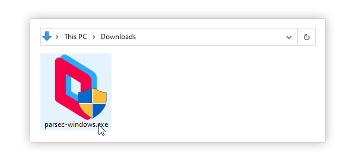
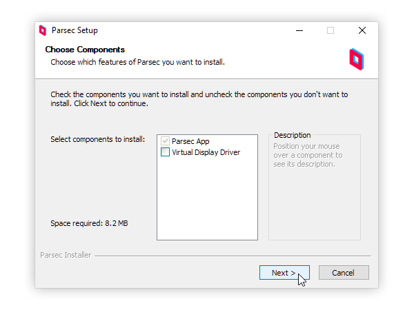
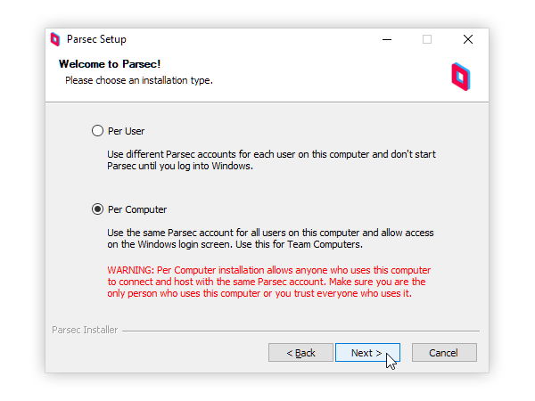
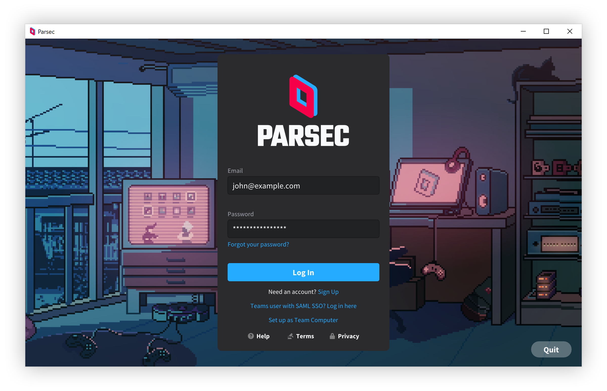
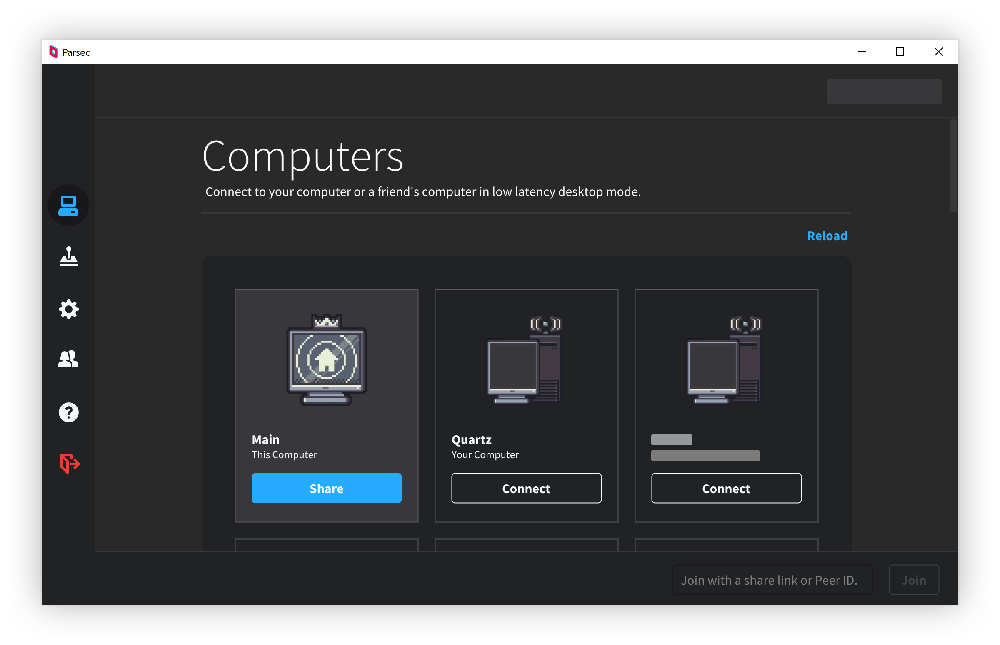

Parsec App auf Windows installieren
Installation und Grundkonfiguration der Parsec-App auf einem Computer mit Microsoft Windows.
Inhaltsverzeichnis
Anforderungen
Parsec ist für Windows 10 oder neuer verfügbar. Abhängig davon, ob ein Computer beitreten oder er hosten soll, ist bestimmte Hardware erforderlich.
Installation
- Windows-Installationsprogramm von der Downloadseite herunter laden.
- Installationsprogramm im Download-Ordner aufsuchen und doppelklicken, um es auszuführen

- Zusätzlichen Komponenten auswählen, die installiert werden sollen und dann auf „Weiter“ klicken.

- Gewünschten Installationstyp auswählen und auf „Weiter“ klicken.

- Parsec beginnt mit der Installation, schließt das Installationsprogramm automatisch und öffnet die App, sobald die Installation abgeschlossen wurde
Anmelden und Verbinden
- Parsec starten
- Anmelden oder ein Konto erstellen, falls noch keins vorhanden

- Einen Freund über die Seitenleiste hinzufügen oder mit demselben Konto auf einem anderen Computer anmelden, der hosten kann, und dann auf dem lokalen Windows-Computer auf „Verbinden“ klicken, um dem Host-Computer beizutreten.
